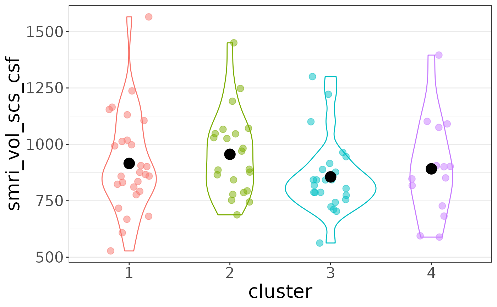
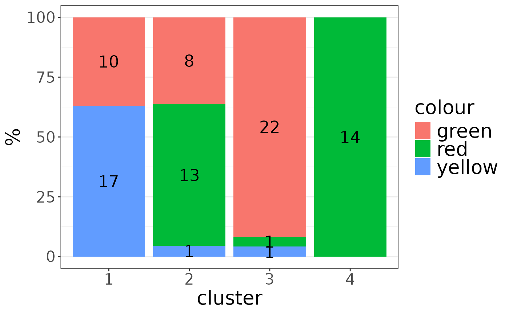
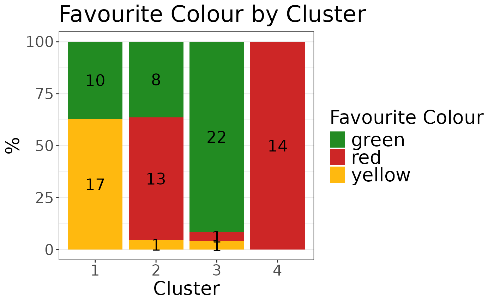

Download a copy of the vignette to follow along here: feature_plots.Rmd
Given a cluster solution formatted as a row of a solutions data frame
(or extended solutions data frame) and a data list containing features
to plot, the auto_plot() function can automatically
generate ggplot-based bar and jitter plots showing how that
particular feature was divided across clusters.
library(metasnf)
dl <- data_list(
list(subc_v, "subcortical_volume", "neuroimaging", "continuous"),
list(income, "household_income", "demographics", "continuous"),
list(fav_colour, "favourite_colour", "misc", "categorical"),
list(pubertal, "pubertal_status", "demographics", "continuous"),
list(anxiety, "anxiety", "behaviour", "ordinal"),
list(depress, "depressed", "behaviour", "ordinal"),
uid = "unique_id"
)## ℹ 188 observations dropped due to incomplete data.
# Build space of settings to cluster over
set.seed(42)
sc <- snf_config(
dl = dl,
n_solutions = 2,
min_k = 20,
max_k = 50
)## ℹ No distance functions specified. Using defaults.## ℹ No clustering functions specified. Using defaults.
# Clustering
sol_df <- batch_snf(dl, sc)
sol_df_row <- sol_df[1, ]The row you pick could come from a solutions_df or
ext_solutions_df class object.
plot_list <- auto_plot(
sol_df_row = sol_df_row,
dl = dl,
verbose = TRUE
)## Generating plot 1/35: smri_vol_scs_cbwmatterlh
## Generating plot 2/35: smri_vol_scs_ltventriclelh
## Generating plot 3/35: smri_vol_scs_inflatventlh
## Generating plot 4/35: smri_vol_scs_crbwmatterlh
## Generating plot 5/35: smri_vol_scs_crbcortexlh
## Generating plot 6/35: smri_vol_scs_tplh
## Generating plot 7/35: smri_vol_scs_caudatelh
## Generating plot 8/35: smri_vol_scs_putamenlh
## Generating plot 9/35: smri_vol_scs_pallidumlh
## Generating plot 10/35: smri_vol_scs_3rdventricle
## Generating plot 11/35: smri_vol_scs_4thventricle
## Generating plot 12/35: smri_vol_scs_bstem
## Generating plot 13/35: smri_vol_scs_hpuslh
## Generating plot 14/35: smri_vol_scs_amygdalalh
## Generating plot 15/35: smri_vol_scs_csf
## Generating plot 16/35: smri_vol_scs_aal
## Generating plot 17/35: smri_vol_scs_vedclh
## Generating plot 18/35: smri_vol_scs_cbwmatterrh
## Generating plot 19/35: smri_vol_scs_ltventriclerh
## Generating plot 20/35: smri_vol_scs_inflatventrh
## Generating plot 21/35: smri_vol_scs_crbwmatterrh
## Generating plot 22/35: smri_vol_scs_crbcortexrh
## Generating plot 23/35: smri_vol_scs_tprh
## Generating plot 24/35: smri_vol_scs_caudaterh
## Generating plot 25/35: smri_vol_scs_putamenrh
## Generating plot 26/35: smri_vol_scs_pallidumrh
## Generating plot 27/35: smri_vol_scs_hpusrh
## Generating plot 28/35: smri_vol_scs_amygdalarh
## Generating plot 29/35: smri_vol_scs_aar
## Generating plot 30/35: smri_vol_scs_vedcrh
## Generating plot 31/35: household_income
## Generating plot 32/35: colour
## Generating plot 33/35: pubertal_status
## Generating plot 34/35: cbcl_anxiety_r
## Generating plot 35/35: cbcl_depress_r
plot_list$"household_income"
plot_list$"smri_vol_scs_csf"
plot_list$"colour"
If there’s something you’d like to change about the plot, you can
always tack on ggplot2 elements to build from the skeleton
provided by auto_plot:
plot_list$"colour" +
ggplot2::labs(
fill = "Favourite Colour",
x = "Cluster",
title = "Favourite Colour by Cluster"
) +
ggplot2::scale_fill_manual(
values = c(
"green" = "forestgreen",
"red" = "firebrick3",
"yellow" = "darkgoldenrod1"
)
)